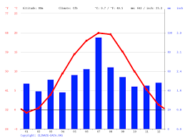

Klimat
Klimat. Wielkopolska należy do najcieplejszych i najbardziej suchych regionów w Polsce.
Przeważają polarno-morskie masy powietrza, co sprawia, że lata są chłodniejsze,
a zimy łagodniejsze niż we wschodniej bardziej kontynentalnej części kraju.
Dominują wiatry zachodnie o prędkości od 2,5 do 3,5 m/s.
